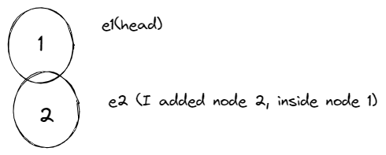

class Node:
def __init__(self,value):
self.value = value
self.next = NonePython创建链表
什么是链表
链表是一种以链的形式来存储数据的数据结构。链表的结构是这样的：每一个数据都与其后一个数据相连（有时候也与前一个数据相连）。链表中的每个元素都被称为一个结点。
你可以把它看作一个实际的链条，其中每一环或者结点都是相连的。
就像这样：

就像其他所有的数据结构一样，链表也有它的优点和缺点。
链表的优点
因为链表是一个链式的数据结构，你可以快速地添加和移除其中的元素。并且这也不需要像数组或者列表那样来重新组织数据。线性的数据结构用链表来实现更加容易。
同样因为它的链式结构，链表也不需要一个固定的或者初始的大小。
链表的缺点
与数组相比，链表占用更多的内存空间。这是因为你需要一个占用额外内存空间的指针来指向下一个元素。
在链表上执行搜索操作非常的慢。不像数组，你不能随机访问链表中的元素。
什么时候应该用链表呢？
你不知道数据列表中会有多少个元素（这是链表的一个优势 - 添加元素非常简单）。
你不需要随机访问任何一个元素（与数组不同，你不能在链表中以一个特定的索引访问元素）。
你想要在数据列表的中间插入元素。
你需要以常数式时间从数据列表中插入和删除元素（与数组不同，你不需要先移动数据列表中的每一个其他元素）。
如何在Python中创建链表
这里有一个创建链表的技巧——它帮助我更好地理解链表。
你只需要意识到你将要添加到链表中的每一个元素都只是一个结点（就像链条中的一环）。头结点（链表中的第一个结点）的特殊之处在于你先确定一个头结点，然后再开始向它后面添加其他结点。
请记住一个链表就像一个链条是怎么连接在一起的。
这里是Joe和一些环，他会帮助我们去学习链表。
在接下来的内容，我会用这张图片去阐述一些事情。所以你可以将图片和文字联系起来思考（这不是艺术课 —— 我重复，这不是艺术课 :) ）。
创建节点：
就是这样。我们需要value这个成员是因为对于任何添加到链表中的元素，它或多或少有一个值（例如，除了极少情况外，你不会向数组中添加一个空字符串，对吗？）
next这个成员使得我们可以与其他结点连接在一起 —— 我的意思是，这就是链表的主要目标。
接下来我们要去定义一些基本的函数。
class LinkedList:
def __init__(self, head=None):
self.head = head
def append(self, new_node):
current = self.head
if current:
while current.next:
current = current.next
current.next = new_node
else:
self.head = new_nodeappend()函数能让你添加结点到链表上。让我们来探索它是怎么工作的。

如果我有两个值 - 例如1和2 - 然后我想要将它们添加到链表中，第一件事就是将它们定义为单独的结点（就像链条中的环一样）。我们可以这样做：
e1 = Node(1)
e2 = Node(2)既然结点已经准备好了，我现在就可以定义一个链表了。一个链表（就像我们看到的链条——总有一个头部链条，对吗），所以我可以用一个实际上是另一个结点（环）作为头结点来定义我的链表。
ll = LinkedList(e1)从上面的代码看来，e1 就是链表的头结点，或者花哨得说是链表的起点。我可以向其中添加更多元素，既然每个链都必须是相连的（也就是说，在彼此的内部），我必须首先设置一个基础用例来检查这个链表有头结点。
链表存在的关键就是它有一个起点。如果它没有，我们可以简单地将新元素作为头部。但是如果它已经有了头结点，我必须遍历整个链表，同时检查是否有一个的 next 成员是空的（或者说就是 None)。
再次重申，一个链表就像一个链条，对吗？所以每一个结点应该用 next 指针指向另一个结点。 一旦一个结点的下一个元素是 none ，就代表着它是链表的末端。所以我可以很容易地在那个位置添加新接点。
让我们创建一个方法来 删除 一个结点。但是在我们那样做之前，让我们先思考一会。想象你有一个链条，然后你发现其中的一环是有问题的。你会怎么做？
你首先找到有问题的那个环，然后拿掉它，之后把它的前一个和它的后一个连接在一起。但是如果有问题的环是第一个，那也很简单 —— 你只需要拿掉它，然后也不需要连接任何事情。第二个环自动地变成了链条的头。试着想象一下。
我们想在链表上做同样的事。所以我们首先找到有问题的一环 —— 在这种情况下就是我们寻找的那个值 —— 然后我们将它之前的和它之后的连接在一起：
class LinkedList:
def __init__(self, head=None):
# ... 实现同前
pass
def append(self, new_node):
# ... 实现同前
pass
def delete(self, value):
"""Delete the first node with a given value."""
current = self.head
if current.value == value:
self.head = current.next
else:
while current:
if current.value == value:
break
prev = current
current = current.next
if current == None:
return
prev.next = current.next
current = None所以我们在这里做的就是简单地遍历每个结点去看它的值是否是我们需要删除的。但是当我们遍历链表的时候，我们也需要一直跟踪前一个值（我们还要将链表重新链接起来）。我们通过 prev = current 来实现这个，你可以在下面看到 :)。
所以当要删除的结点被找到后，prev 变量包含了它前面的结点，所以它的next值可以很简单地切换为指向另一个结点 - 在这种情况下也就是与我们想要删除的结点相连的其他结点。我希望这能解释得通 :) 。
让我们来研究将一个 结点插入 到一个特定的地方。我们将使用我们的链条作为类比来更好地理解。
当你有一个链条，然后你想要增加链条的长度，你有三个选择。你可以：
- 在链条的头部添加一个环 （元素）。（这很简单，对吗？）
- 把它添加到链条的末尾。（这和1很像）
- 或者你可以把它添加到链条中间的任何一个位置（有一点棘手）
你需要记住的一件事就是不管你决定把它添加到哪里，你必须把其他结点连接到它。只有当你使用一个循环来跟踪其他节点时这才有可能。
让我们实际地来看看：
class LinkedList:
# Same as before
def insert(self, new_element, position):
"""Insert a new node at the given position.
Assume the first position is "1".
Inserting at position 3 means between
the 2nd and 3rd elements."""
count=1
current = self.head
if position == 1:
new_element.next = self.head
self.head = new_element
while current:
if count+1 == position:
new_element.next =current.next
current.next = new_element
return
else:
count+=1
current = current.next
# break
pass在上面的代码中，我们传入了一个插入结点的位置。如果这个位置是第一个，这就代表着这个结点要作为头结点。由于我们不是很确定，我们可以初始化一个循环和一个计数器来跟踪这个循环。
如果我们传入的位置是1（也就是头结点），简单地将当前的头结点存储为变量dummy，然后创建一个新头结点，接着将之前的头结点（也就是整个链条）加入到这个新头结点后。
如果这个位置不是1，那么就遍历这个链条直到你找到了那个位置。
在这篇文章的最后，让我们以任何你想要的形式来展示链表的值 - 例如，打印出来或者把它添加到一个列表中。我将只会把它们打印出来。
这是很直接的，就像现实的链条：你只需要在有结点的地方得到它的值，然后移动到下一个结点
class LinkedList:
def __init__(self, head=None): # 同之前的实现
self.head = head
def append(self, new_node): # 同之前的实现
current = self.head
if current:
while current.next:
current = current.next
current.next = new_node
else:
self.head = new_node
def insert(self, position, new_node): # 同之前的实现
# ... 插入方法的实现
pass
def delete(self, value): # 同之前的实现
# ... 删除方法的实现
pass
def print(self):
"""Print all values in the linked list."""
current = self.head
while current:
print(current.value)
current = current.next
def traverse(self)->list:
"""Traverse the linked list and return a list of values."""
values = []
index=0
current = self.head
while current!=NULL:
values.append(current.value)
current = current.next
index+=1
return values
def find(self,value)->int:
"""Find the index of the first occurrence of a value in the linked list."""
index=0
current = self.head
while current!=NULL:
if current.value==value:
return index
current = current.next
index+=1
return -1双向链表
双向链表是一个链表，其中每个结点都有一个指向前一个和后一个结点的指针。这使得它在某些情况下非常有用，例如当你需要在链表中向前和向后遍历时。
class Node:
"""双向链表节点类"""
def __init__(self, data=None):
self.data = data
self.prev = None # 指向前一个节点
self.next = None # 指向后一个节点
class DoublyLinkedListSentinel:
"""使用哨兵节点的双向链表类"""
def __init__(self):
# 创建哨兵节点（头哨兵和尾哨兵）
self.head_sentinel = Node() # 头哨兵节点，data为None
self.tail_sentinel = Node() # 尾哨兵节点，data为None
# 初始化哨兵节点的连接
self.head_sentinel.next = self.tail_sentinel
self.tail_sentinel.prev = self.head_sentinel
self.size = 0 # 链表长度
def is_empty(self):
"""检查链表是否为空"""
return self.size == 0
def _insert_between(self, data, predecessor, successor):
"""在predecessor和successor之间插入新节点（内部方法）"""
new_node = Node(data)
# 连接新节点
new_node.prev = predecessor
new_node.next = successor
# 更新相邻节点的连接
predecessor.next = new_node
successor.prev = new_node
self.size += 1
return new_node
def _remove_node(self, node):
"""移除指定节点（内部方法）"""
predecessor = node.prev
successor = node.next
# 跳过要删除的节点
predecessor.next = successor
successor.prev = predecessor
self.size -= 1
return node.data
def append(self, data):
"""在链表尾部添加节点"""
# 在尾哨兵前插入新节点
return self._insert_between(data, self.tail_sentinel.prev, self.tail_sentinel)
def prepend(self, data):
"""在链表头部添加节点"""
# 在头哨兵后插入新节点
return self._insert_between(data, self.head_sentinel, self.head_sentinel.next)
def insert_after(self, node, data):
"""在指定节点后插入新节点"""
if node is None or node == self.tail_sentinel:
raise ValueError("无效的节点")
return self._insert_between(data, node, node.next)
def insert_before(self, node, data):
"""在指定节点前插入新节点"""
if node is None or node == self.head_sentinel:
raise ValueError("无效的节点")
return self._insert_between(data, node.prev, node)
def delete(self, node):
"""删除指定节点"""
if (node is None or node == self.head_sentinel or
node == self.tail_sentinel):
raise ValueError("无效的节点")
return self._remove_node(node)
def delete_first(self):
"""删除第一个数据节点"""
if self.is_empty():
raise ValueError("链表为空")
return self._remove_node(self.head_sentinel.next)
def delete_last(self):
"""删除最后一个数据节点"""
if self.is_empty():
raise ValueError("链表为空")
return self._remove_node(self.tail_sentinel.prev)
def find(self, data):
"""查找包含指定数据的节点"""
current = self.head_sentinel.next
while current != self.tail_sentinel:
if current.data == data:
return current
current = current.next
return None
def find_all(self, data):
"""查找所有包含指定数据的节点"""
results = []
current = self.head_sentinel.next
while current != self.tail_sentinel:
if current.data == data:
results.append(current)
current = current.next
return results
def get_first(self):
"""获取第一个数据节点"""
if self.is_empty():
return None
return self.head_sentinel.next
def get_last(self):
"""获取最后一个数据节点"""
if self.is_empty():
return None
return self.tail_sentinel.prev
def get_at_index(self, index):
"""获取指定索引位置的节点"""
if index < 0 or index >= self.size:
raise IndexError("索引超出范围")
# 根据索引位置选择从头开始还是从尾开始遍历
if index < self.size // 2:
# 从头开始遍历
current = self.head_sentinel.next
for i in range(index):
current = current.next
else:
# 从尾开始遍历
current = self.tail_sentinel.prev
for i in range(self.size - index - 1):
current = current.prev
return current
def display_forward(self):
"""正向显示链表内容"""
elements = []
current = self.head_sentinel.next
while current != self.tail_sentinel:
elements.append(current.data)
current = current.next
return " <-> ".join(map(str, elements))
def display_backward(self):
"""反向显示链表内容"""
elements = []
current = self.tail_sentinel.prev
while current != self.head_sentinel:
elements.append(current.data)
current = current.prev
return " <-> ".join(map(str, elements))
def clear(self):
"""清空链表"""
# 重置哨兵节点的连接
self.head_sentinel.next = self.tail_sentinel
self.tail_sentinel.prev = self.head_sentinel
self.size = 0
def __iter__(self):
"""迭代器支持"""
current = self.head_sentinel.next
while current != self.tail_sentinel:
yield current.data
current = current.next
def __len__(self):
"""返回链表长度"""
return self.size
def __str__(self):
"""字符串表示"""
return self.display_forward()